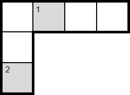
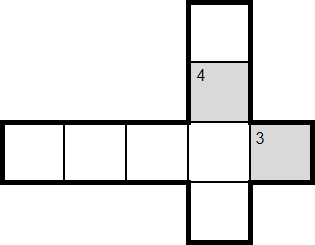
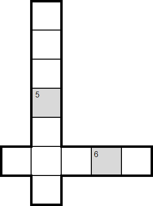
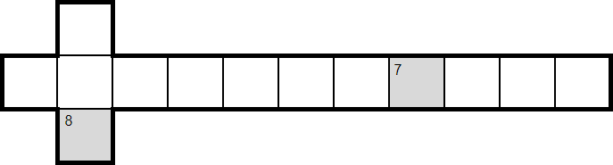
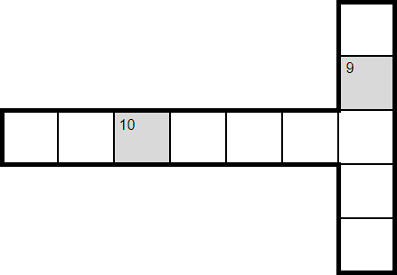
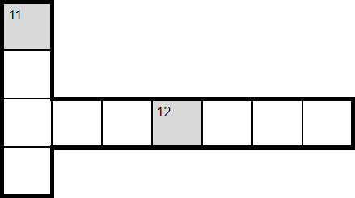
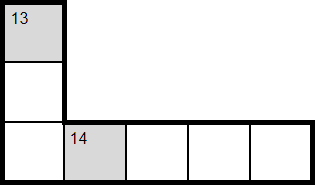
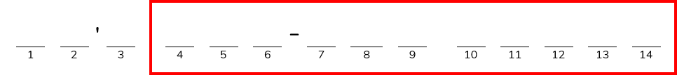

Crossed Words
A: "You know that feeling when you trip over your words and everything comes out garbled?"
B: "I can't remember the last time I spoke a coherent sentence, actually."
Hopefully these sentences don't make you cross-eyed.
EXERCISE GUNSHOTS REGIMEN FROM BY SEVERAL GREG DIRECTIONS GLASSMAN

PAIR PUZZLE OF WHERE GUIDING YOU LINES FILL IN WORDS A INTO SNIPER A SCOPE GRID

LONG ANIMAL DISTANCE LIKE NATURAL A TERRAIN LABRADOODLE RUNNING FOR SPORT EXAMPLE

FERTILISATION RANGED OF WEAPON ONE THAT PLANT FIRES BY BOLTS ANOTHER

PART CUT-AWAY OF VIEW PIRATE OF EMBLEM OBJECT BENEATH ALONG A AN SKULL AXIS

INFINITY INTERROGATE WAR SOMEONE WAS LIKE AN A AMBITIOUS PROSECUTOR ONE WOULD

METAL STREET PIECE INTERSECTION AT OR THE POINT TOP WHERE OF A A DECISION FOOTBALL IS GOAL MADE

